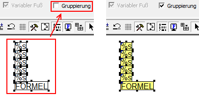
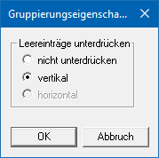
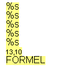
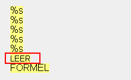

Ø Gruppierung
Mit dieser Option können mehrere Elemente gruppiert bzw. zusammengefasst werden. Gruppierte Elemente werden im Formular gelb dargestellt. Damit können folgende Anforderungen gelöst werden:
ü Elemente können gemeinsam positioniert werden. Wenn eine Gruppe aktiviert wird und z.B. verschoben wird, dann werden immer alle Elemente dieser Gruppe verschoben - oder es kann für alle Elemente der Gruppe eine andere Schriftart vergeben werden.
ü Damit kann der Ausdruck von Leerzeilen gesteuert werden (Postanschrift). Abhängig davon, ob in der Variable ein Wert enthalten ist oder nicht, wird die entsprechende Zeile angedruckt. Bleibt eine Variable leer, wird die nachfolgende Variable angeschlossen (es gibt keine Leerzeile).
Positionierung
Für eine gemeinsame Positionierung werden die Elemente (hier die Zeilen einer Adresse) markiert und anschließend die Option "Gruppierung" aktiviert.

Im Anschluss daran kann der gesamte gruppierte Block durch einen Mausklick markiert und verschoben werden.
Leereinträge
Um Leereinträge zu unterdrücken werden die Elemente (hier die Zeilen einer Adresse) markiert und anschließend die Option "Gruppierung" aktiviert.
Der Adressblock besteht dabei aus den folgenden Elementen:
ü Anrede
ü Name
ü z.Hd.
ü Straße
ü Straße 2
ü Postleitzahl / Ort (gebildet über eine Formel)
Um nun Leereinträge zu unterdrücken, wird per rechter Maustaste (auf das gruppierte Element) das Kontextmenü geöffnet und der Punkt "Eigenschaften" ausgewählt.

In dem Fenster "Gruppierungseigenschaften" kann durch Anwahl der Option "vertikal" eine Unterdrückung von Leereinträgen definiert werden.
Hinweis
Soll bei der Adresse dennoch eine Leerzeile vor der PLZ und dem Ort gedruckt werden, so kann dieses durch einfügen eines Steuerzeichen 13,10 (Zeilenumbruch) erreicht werden.

Alternativ dazu kann auch ein "leerer" Texteintrag hinterlegt werden.
